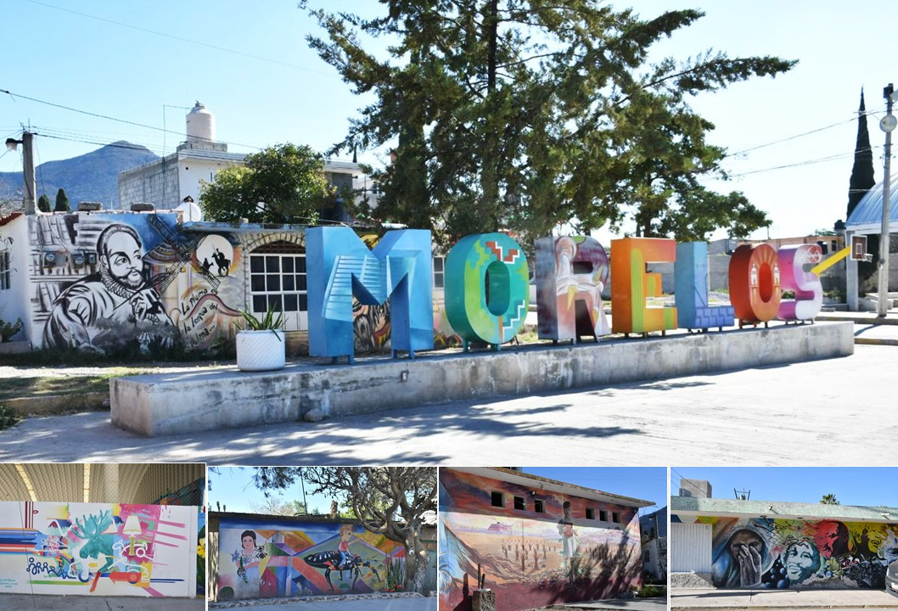
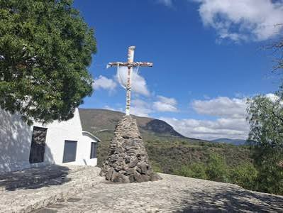
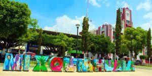
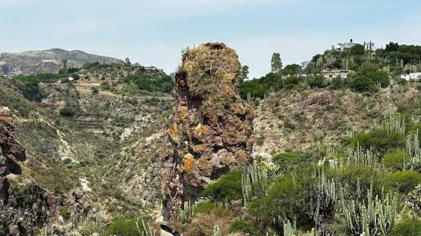
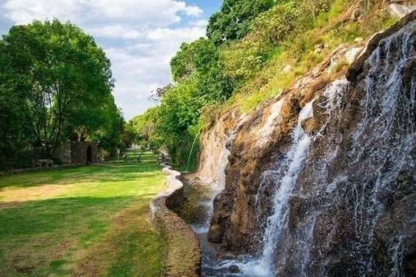
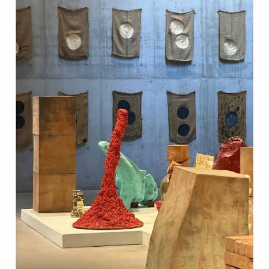
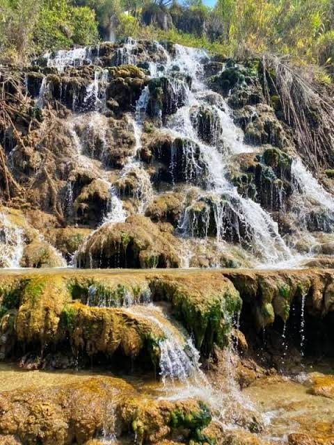
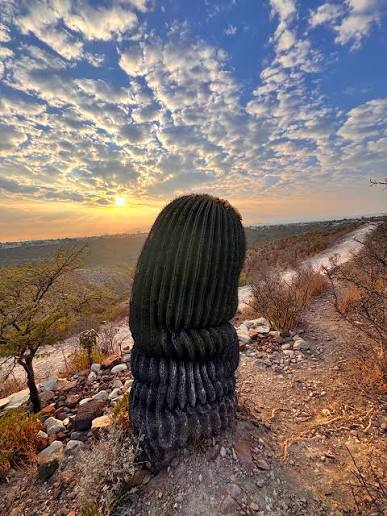

Arte y cultura
Murales en Colonia Morelos
Una galería a cielo abierto con obras que reflejan la identidad y creatividad de la comunidad.

Descubre la magia de nuestro patrimonio cultural.

Recorre una galería urbana llena de color e identidad.

Explora los paisajes y rincones emblemáticos del municipio.
Valle del Mezquital · Hidalgo
Explora los lugares emblemáticos que harán tu visita inolvidable.
Una galería a cielo abierto con obras que reflejan la identidad y creatividad de la comunidad.

Vistas panorámicas, senderos y una cascada natural a pocos minutos del centro.
Un monumento prehispánico que conecta con las raíces históricas de la región.

El corazón social del municipio, rodeado por los portales, el palacio y la iglesia.

Una mansión abandonada de arquitectura singular, cerca del Río Tula y Tunititlan.

Balneario familiar conocido por sus cascadas, aguas templadas y áreas verdes.
El Puente Demiñho: arquitectura civil colonial entre ahuehuetes y el Río Tula.

La casa-museo del pintor y escultor hidalguense, ubicada en la zona de La Cruz.

Un rincón fresco y verde en la barranca, ideal para caminar y disfrutar el paisaje.

Un sendero por el paisaje árido del Valle del Mezquital y sus cactus gigantes.
Mixquiahuala te espera